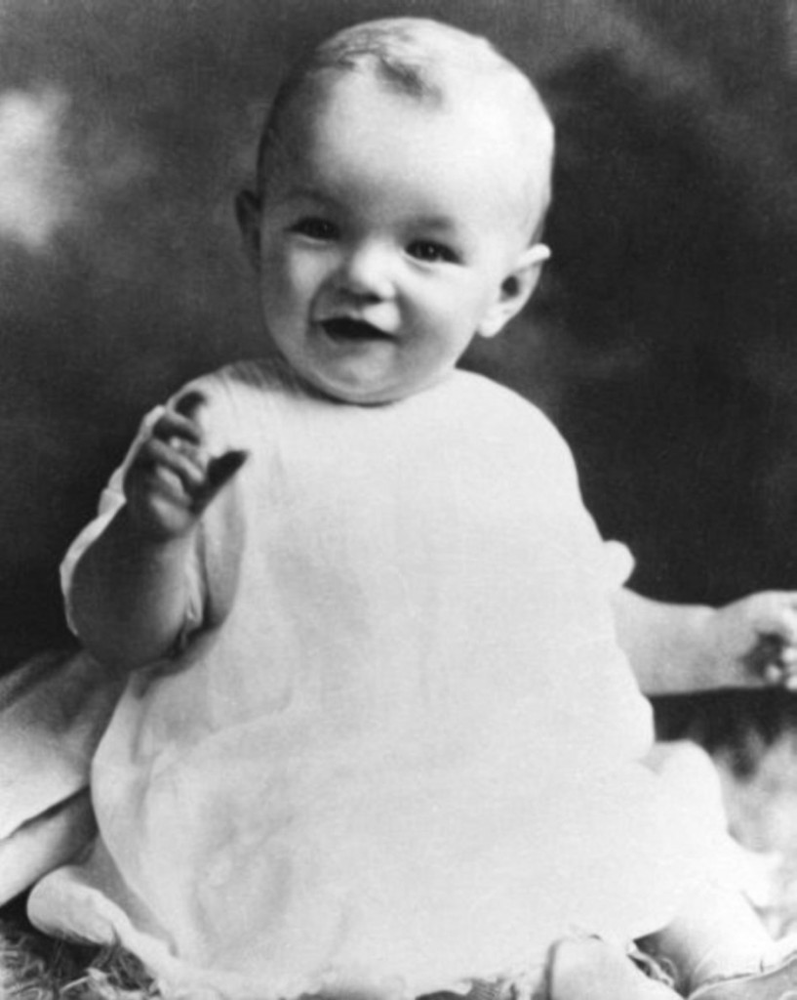

Jun 1 1926 Marilyn Monroe is Born She was born Norma Jeane Mortenson on June 1, 1926 in Los Angeles, California, to Gladys Baker. As the identity of her father is undetermined, she was later baptized Norma Jeane Baker. Gladys had been a film cutter at RKO studios, but psychological problems prevented her from keeping the job and she was eventually committed to a mental institution. Norma Jeane spent most of her childhood in foster homes and orphanages until 1937, when she moved in with family friend Grace McKee Goddard. Unfortunately, when Grace's husband was transferred to the East Coast in 1942, the couple couldn't afford to take 16-year-old Norma Jeane with them. Norma Jeane had two options: return to the orphanage or get married
